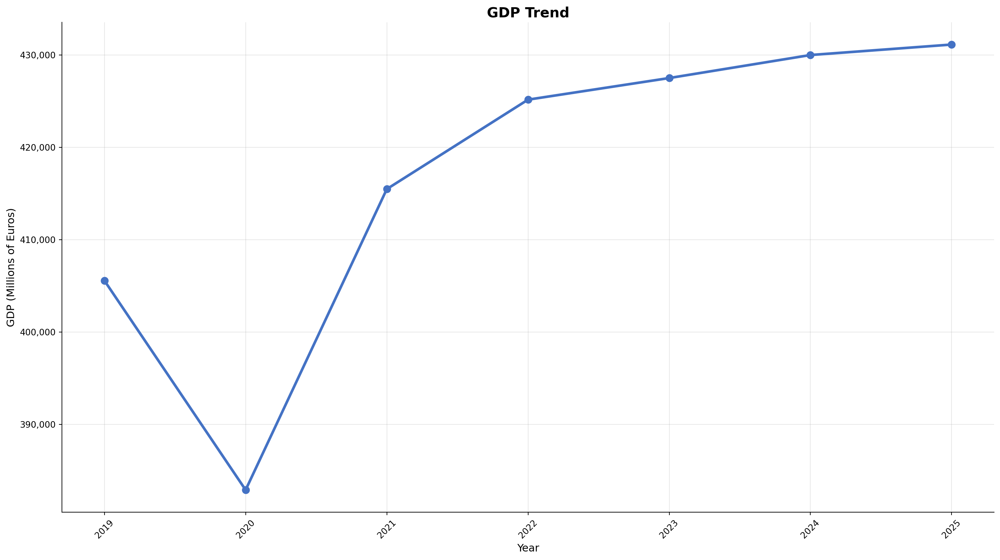
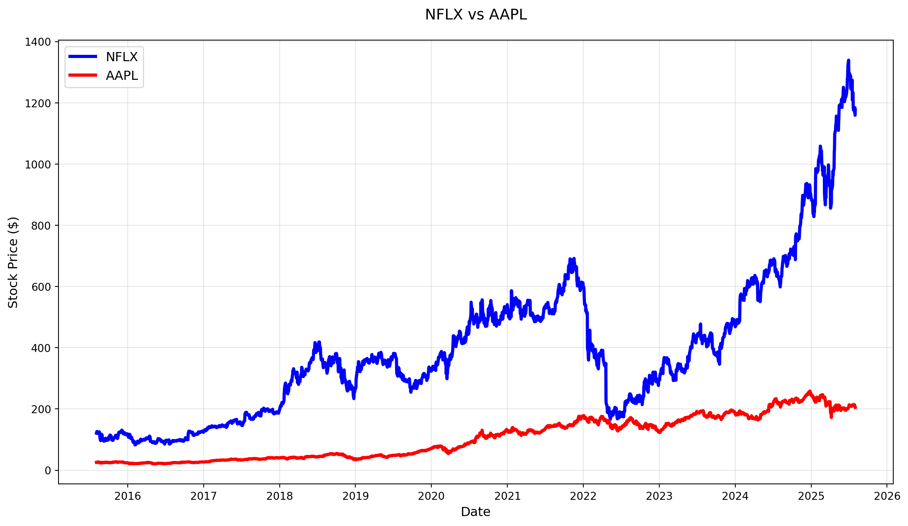
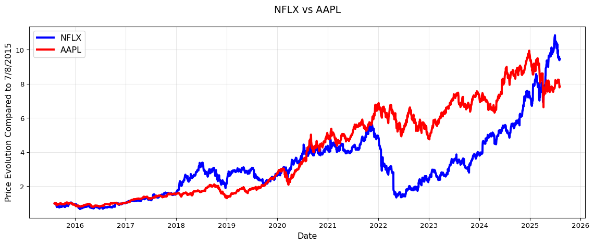

| Year | GDP (Millions €) |
|---|---|
| 2019 | 405,563 |
| 2020 | 382,900 |
| 2021 | 415,474 |
| 2022 | 425,154 |
| 2023 | 427,494 |
| 2024 | 429,985 |
| 2025 | 431,120 |
Lisbon Accounting and Business School – Polytechnic University of Lisbon
Instructor: Paulo Fagandini
📧 pfagandini@iscal.ipl.pt
Main source for course material: Moodle@ISCAL
Alternative source (EN): My personal website
Official communication channel: 📧 Institutional Email
📖 A Practical Introduction to Index Numbers. 1st Ed 2015. Jeff Ralph, Rob O’Neill, Joe Winton.
📖 Statistics for Business and Economics Global Edition. 10th Ed 2022. Paul Newbold, William Carlson, and Betty Thorne.
This last book is a bit expensive, but it can be rented for less money here. The Publisher kindly offered a 25% discount with the code MISLIBROS2025. This code is valid for the whole site until December 31st , 2025.
| Assessment Element | Weight (%) | Duration | Syllabus | Date |
|---|---|---|---|---|
| Midterm | 60% | 80 minutes | Topics 1 and 2 | Week Nov 11-15 |
| Partial Exam | 40% | 80 minutes | Topic 3 | Regular Exam Date |
Each test has a minimum grade of 7.00 (out of 20), not 6.9, not 6.95.
Students may opt, on the day of the Exam, to take an Exam worth 100% of the grade. This Exam will cover Topics 1, 2, and 3.
If you score less than 7.00 in the Midterm, or if you cannot attend the midterm for whatever reason, you will have to do the Comprehensive Exam.
Italian Real GDP (base = 2010)
| Year | GDP (Millions €) |
|---|---|
| 2019 | 405,563 |
| 2020 | 382,900 |
| 2021 | 415,474 |
| 2022 | 425,154 |
| 2023 | 427,494 |
| 2024 | 429,985 |
| 2025 | 431,120 |
Source: FRED

Let the GDP for Italy be represented by the variable \(y_t\), so \(y_{2019}\) is the GDP we got for 2019 (i.e. 405,563).
How much did \(y\) grow between 2019 and 2020?
\[\Delta y_{2020} = y_{2020} - y_{2019} = 382\,900 - 405\,563\]
\[=-22663\]
Or we could say
\[y_{2020}=y_{2019}+\Delta y_{2020}\]
\[382900=405563+(-22663)\]
\[y_{2020}=y_{2019}+\Delta y_{2020}\]
\[y_{2020}=y_{2019}\left(1+\frac{\Delta y_{2020}}{y_{2019}}\right)\]
\[y_{2020}=y_{2019}\left(1+\delta^y_{2020}\right)\]
This, \(\delta_{2020}^y\), is the growth rate of \(y\) at year 2020.
Growth Rate
Let \(y_t\) be a variable that might take different values over time. The growth rate at \(t\) is given by \(\delta_t^y\), and takes a value such that: \[y_t=y_{t-1}\left(1+\delta_t\right)\]
And then \[\delta_t = \frac{y_t-y_{t-1}}{y_{t-1}}\]
Note: I dropped \(y\) from the notation in the formula because it is obvious that we are talking about the variable \(y\).
You can write the growth rate as a decimal or as a percentage. If you use decimal notation, consider at least 4 places, if you use percentage you use at least 2. Example: 0.0123 or 1.23%.
Interpretation: What is the percentage change for the variable \(y\) between \(t-1\) and \(t\).
\[382900=405563+(-22663)\]
\[382900=405563\left(1+\frac{-22663}{405563}\right)\]
\[382900=405563\left(1+{-0.0559}\right)\]
In this case \(\delta_{2020}^y = -0.0559 = -5.59\%\).
Interpretation: Between 2019 and 2020, the GDP for Italy decreased 5.59%.
More generally \[\delta_{t+k|t}=\frac{y_{t+k}-y_t}{y_t}\]
Or \[y_{t+k}=y_t(1+\delta_{t+k|t})\]
(homework: Show step by step how you go from one to the other.)
Note: In this case \(\delta_{t+k|t}\) is what percentage the variable changed from \(t\) to \(t+k\), and \(k\) is the number of periods.
We had \(y_{2019}=405\,563\), and \(y_{2023} = 427\,494\). We will try to find \(\delta_{2023|2019}^y\).
\[k=2023-2019=4\]
\[\delta_{2023|2019}^y = \frac{427\,494 - 405\,563}{405\,563} = 0.0541 = 5.41\%\]
In Italy, GDP grew 5.41% between 2019 and 2023, or GDP in Italy in 2023 is 5.41% larger than in 2019.
Warning
You should be careful with your interpretation and use of this cumulative growth rate, because it does not mean that \(y\) grew \(\delta_{t+k|t}^y\) per period between \(t\) and \(t+k\).
Average Growth Rate
Let \(y_t\) be a variable that might take different values over time. The average growth rate betweek \(t\) and \(t+k\) is given by \(\overline{\delta}_{t+k|t}^y\), and takes a value such that: \[y_{t+k}=y_t\left(1+\overline{\delta}_{t+k|t}\right)^k\]
I dropped \(y\) from the notation in the formula because it is obvious that we are talking about the variable \(y\).
Let’s start with \(y_t\)… and the traditional growth rates \(\delta_t\): \[y_{t+1} = y_t(1+\delta_t)\] \[y_{t+2} = y_{t+1}(1+\delta_{t+1})\] \[y_{t+3} = y_{t+1}(1+\delta_{t+2})\]
Can we write \(y_{t+2}\) as a function of \(y_t\)?
\[y_{t+2} = y_{t+1}(1+\delta_{t+1}) = y_{t}(1+\delta_t)(1+\delta_{t+1})\]
And \(y_{t+3}\)?
\[y_{t+3} = y_{t}(1+\delta_t)(1+\delta_{t+1})(1+\delta_{t+2})\]
Generalizing
\[y_{t+k}=y_t (1+\delta_t)(1+\delta_{t+1})...(1+\delta_{t+k-1})\]
When computing the average growth rate, we are trying to find \(\overline{\delta}\) such that if the growth rate was the same every period, it would have taken \(y_t\) to the value of \(y_{t+k}\) all the same:
\[y_{t+k}=y_t(1+\overline{\delta})(1+\overline{\delta})...(1+\overline{\delta})\]
How many times is \((1+\overline{\delta})\) multiplied in the expression?
\[y_{t+k} = y_t \left(1+\overline{\delta}\right)^k\]
\[\frac{y_{t+k}}{y_t} = \left(1+\overline{\delta}\right)^k\]
\[\left(\frac{y_{t+k}}{y_t}\right)^{1/k} = \left(1+\overline{\delta}\right)\]
\[\left(\frac{y_{t+k}}{y_t}\right)^{1/k} - 1 = \overline{\delta}\]
\[\overline{\delta}_{t+k|t}=\left(\frac{y_{t+k}}{y_t}\right)^{1/k} - 1\]
We had \[\delta_{2023|2019}^y = \frac{427\,494 - 405\,563}{405\,563} = 0.0541 = 5.41\%\]
But what now is the average growth rate between 2019 and 2023?
Remember \(k = 4\)!
\[\overline{\delta} = \left(\frac{427\,494}{405\,563}\right)^{1/4} - 1 \approx 0.0133=1.33\%\]
Interpretation: On average, between 2019 and 2023 \(y\) grew 1.33% every year.
Note that \[(1+1.33\%)^4 = (1+0.0133)^4 \approx 1.0541 \approx 1 + 5.41\%\]

Which stock would you have purchased in 2015?
What’s the important question here?
Which one grew more! For this, levels are not as relevant as their evolution over time.
For example, say we have prices for two stocks A and B. Say we want to hold these stocks for only one period, which one would choose to invest your hard earned 💵?
How many stocks will you be able to buy of each stock, if their prices are \(a_t\) and \(b_t\), and you have US$1000?
\(n_a=\frac{1000}{a_t}\) of stock A and \(n_b=\frac{1000}{b_t}\) of stock \(B\). Note that \(n_a\) and \(n_b\) are the amount of stock you can buy of each.
Now is a new day 🌄! Prices are now \(a_{t+1}\) and \(b_{t+1}\), how much is your portfolio worth today?
Note that the 1000 is fixed, so it is just what we invested, it is not going to change anything in our decision on buying A vs B, what is really important is \(\frac{a_{t+1}}{a_t}\) and \(\frac{b_{t+1}}{b_t}\), that is the growth rate of prices for each stock, as
\[\frac{a_{t+1}}{a_t}=1+\delta_{t+1}^a \quad\text{and}\quad \frac{b_{t+1}}{b_t}=1+\delta_{t+1}^b\]
You did not sell and…
Now is (another) new day 🌄! Prices are now \(a_{t+2}\) and \(b_{t+2}\), how much is your portfolio worth today?
blah, blah…
\[\frac{a_{t+2}}{a_t}=1+\delta_{t+2}^a \quad\text{and}\quad \frac{b_{t+2}}{b_t}=1+\delta_{t+2}^b\]
If we wait two days, we only care how is the price today compared to when we made the purchase. We could make instead a plot of \(1+\delta_{t+k}\) to see which grew more!

Now we have much clear picture. We can compare their evolution starting in 3/8/2015.
What can you read from the plot?
Note that for 3/8/2015, we would have, for A and B:
\[1+\frac{a_t-a_t}{a_t}=1\quad\text{and}\quad 1+\frac{b_t-b_t}{b_t}=1\]
We just built and index number!
By convention though, instead of using 1 for the reference date, we will use 100 (as in 100%) for the reference day (we will put a name to this in a few moments).
When our new series was 2, we understood that \(1+\delta_{t+k}=2\) or \(\delta_{t+k}=1\), i.e. the price grew 100%, or doubled! Now, with the new notation, we would have that the new series would take the value of 200, i.e. the price is now 200% the value it had at our initial date.
Index Number
An Index Number is a scaled variable that takes as a reference point the value an underlying variable took at a fixed point in time. Say, for an underlying variable \(x_t\) we build an index \(I_t\).
\[I_t=\frac{x_t}{x_0}\times 100\]
Where \(x_t\) is the value the underlying variable takes at time \(t\), and \(x_0\) representes the value this variable took at our reference point. This period is called base.
Note: In this case we used time as the dimension for \(t\) but this needs not be the case, we will see examples later.
In our previous example, the base day would have been 3/8/2015. Note that in the base period \[I_0=\frac{x_0}{x_0}\times 100 = 100\]
Index Numbers are defined by their underlying variable. This can change over time, or it can change according to another dimension, like geography, or both! We will see examples.
Also, an Index Number can have a fixed base or a moving base.
flowchart TD A[Index] --> B(Underlying Variable) A --> C(Base) A --> D(Dimension) B --> E[Simple] B --> F[Composite] C --> G[Fixed] C --> H[Rolling] D --> I[Chronological] D --> J[Geographical]
| Type | Example |
|---|---|
| Simple | Single stock price |
| Composite | SP500 (market index), CPI |
| Fixed Base | GDP, CPI, market index |
| Rolling Base | Some measures of GDP, Commodities Futures |
| Chronological | Stock price over time, CPI, GDP |
| Geographical | BigMac Index |
Importantly, an index number is no bueno to reflect the level of a variable, but its evolution or relative value against a base.
Chain or Link Index
A Chain or Link Index Number is an index number that updates its base in every period.
\[I_t = \frac{x_t}{x_{t-1}}\times 100\]
Index numbers allow us to easily compute the growth rate between any two periods, just like we would do with the underlying variable:
\[1+\delta_{t+k,t}=\frac{x_{t+k}}{x_t}=\frac{x_{t+k}}{x_t}=\frac{\frac{x_{t+k}}{x_0}}{\frac{x_t}{x_0}}=\frac{I_{t+k}}{I_t}\]
\[1+\delta_{t+k,t}=\frac{x_{t+k}}{x_t}=\frac{x_{t+k}}{x_{t+k-1}}\frac{x_{t+k-1}}{x_{t}}=\frac{x_{t+k}}{x_{t+k-1}}\frac{x_{t+k-1}}{x_{t+k-2}}\frac{x_{t+k-2}}{x_{t}}=\frac{x_{t+k}}{x_{t+k-1}}\frac{x_{t+k-1}}{x_{t+k-2}}...\frac{x_{t+1}}{x_{t}}\] \[1+\delta_{t+k,t}=I_{t+k}\times I_{t+k-1}\times ... \times I_{t+2} \times I_{t+1}\]
Do not use 100 index when multiplying chain or link indices, use the decimal notation.
Note that if the underlying variable does not change at all, you should expect the same value, \(x_t=x_{t+1}=x_{t+2}\)
In this case \(I_{t+1}=\frac{x_{t+1}}{x_t}=1\) and \(I_{t+2}=\frac{x_{t+2}}{x_{t+1}}=1\), and therefore \[1+\delta_{t+2,t}=1\times 1= 1\] This is the correct way to do it ✅.
But if instead you used the 100 to multiply: \[1+\delta_{t+2,t}=100\times 100= 10000\] and we get that \(x\) grew 100 times! (❌ because we know that \(x_t=x_{t+1}=x_{t+2}\))
Statistics I